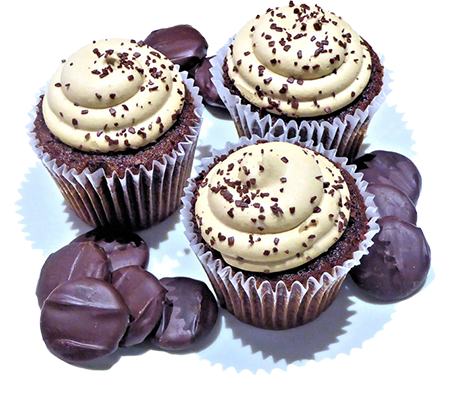

CupCake
If understood and brewed right, coffee can be your best friend; it will give you a warm, fuzzy feeling that far surpasses any comfort food. Says Rhicha Sinha,head of beverages, Café Coffee Day, “At home, we are used to brewing coffees in the traditional South Indian filters.
People want to taste coffee in different ways, but not all are aware of the various brewing techniques of preparing this mysterious beverage. It is just a matter of educating people to realise that culinary-wise, coffee is up there in terms of food.” As our fascination and understanding of coffee ascends, experts are looking for new ways to excite and enhance the consumer experience with this intense brown fluid.
